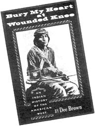

L.A. FREE PRESS/$5.00/year/7813 Beverly Blvd./
Los Angeles/Calif. 90036
"The whites told only one side. Told it to please them selves. Told much that is not true. Only his own best . deeds, only the worst deeds of the Indians, has the white man told."
Yellow Wolf of the Nes Perces
Yellow Wolf was so right it hurts. And now that Dee Brown has written Bury My Heart at Wounded Knee it hurts even more because the saga is so complete in its grisliness, its horrors of inhumanity, its sweeping injustice.
We all know the Indian was ripped off but Bury My Heart is the first detailed chronicle of the destruction of a people and for those who read it the opening of the "American" West will never be what it was in high school. In fact, this "glorious chapter" of American history should be more than equal to Germany's World War II period and for those with any dignity at all our "American heritage" is the antithesis of "great." Of all the skeletons in the American closet, those of Satanta, Kicking Bird, Crazy Horse, Black Kettle, Dull Knife, Cochise, Sitting Bull, Red Cloud and Standing Bear are the most prominent.
It is exceedingly difficult to read Brown's book, not because the language is awkward or the sentences long, (which isn't the case) but because each chapter, page and sentence will surely leave all but the most callous with a profound sense of woe, disgust, and shame. Brown deals with all of the major and most of the minor actions that involved almost all tribes and the scenario is always the same.
The Indian roams his tribal lands peacefully and simply, with great reverence for the country and its inhabitants. Then the white man comes, stumbling all over himself to reach the gold fields of California or the rich farmland of the high plains. The Indian is no more than an irritation, a bothersome barrier that must be moved to one side if manifest destiny is to be realized. Lands are stolen and reservations, the land that the white man has already passed up or plundered, are assigned. 'Those who will not go to the reservation are hunted down mercilessly. Sometimes even those who have agreed to come in are attacked (Sand Creek for example) and massacres take place with cover-ups which make My Lai look like a really amateur job. Once on the reservation the Indian is often forced to move again, farther away from his ancient homeland, after gold is discovered or a convenient road to the West Coast is planned. On the reservation he is fed scraps of the white man's food by corrupt, unscrupulous overseers, and discouraging words mean death.
The Indian can be massacred at Sand Creek, Washita or Wounded Knee with little or no public outcry, but when he retaliates by killing a few settlers, imitating the white man through mutilation, the public outrage is profound and the military is given a blank "kill" check. With every chapter the heinous treatment is repeated, leaving the reader only two alternatives of response-weeping or vomiting.
Brown does not let the reader off that easily, though, for he has chosen (unfailingly) to write his history from the Indian point of view-a technique that allows the reader to see how the Indian reacted to the behavior of his forefathers.
Through tireless and masterful research Brown has succeeded in documenting events as they truly took place and there are many revelations for even the most liberal-minded white man of today.
The general lay conception of the great Indian purge erroneously views the extinct tribes as confused victims of the white onslaught. Nothing could be further from the truth. Indians knew precisely what was happening to them. What they could not understand was why the white man regarded land as a commercial resource, why he broke promise after promise and why he seemed bent on killing the Indian whenever possible. It was with disbelief rather than confusion that the Indian viewed the advent of white "civilization" and much of the importance of Brown's book lies in the extensive quoting of the Indian outlook which is sometimes poetic, often noble and always reflects only the highest intelligence. Most of all, however, it is tragic.
"My people have never first drawn a bow or fired a gun against the whites. There has been trouble on the line between us, and my young men have danced the war dance. But it was not begun by us. It was you who sent out the first soldier and we who sent out the second . . . You said that you wanted to put us upon a reservation, to build us houses and make us medicine lodges. I do not want them. I was born upon the prairie, where the wind blew free and there was nothing to break the light of the sun. I was born where there were no enclosures and where everything drew a free breath. I want to die there and not within walls. I know every stream and every wood between the Rio Grande and the Arkansas. I have hunted and lived over the country. I lived like my fathers before me, and like them, 1 lived happily . . . the Texans have taken away the places where the grass grew the thickest and the timber was the best. Had we kept that, we might have done the things you ask. But it is too late. The white man has the country which we loved, and we only wish to wander on the prairie until we die."
Ten Bears of the Yamparika Comanches
And they tried so hard. All the great leaders: Kicking Bird, Black Kettle, Chief Joseph, Crazy Horse, Sitting Bull and Red Cloud at first had embraced the white man. Time and again he deceived and stole from them but nonetheless the chiefs sat down patiently with commissioners of the Great Father in Washington only to be deceived again. Red Cloud was perhaps the greatest politician of all but even his attempts at cooperation failed with men who considered his people nothing more than obstacles to progress.
"Whose voice was first sounded on this land? The voice of the red people who had but bows and arrows . . . What has been done in my country I did not want, did not ask for it; white people going through my country . . . When the white man comes in my country he leaves a trail of blood behind him . . . I have two mountains in that country - the Black Hills and the Big Horn Mountain. I want the Great Father to make no roads through them. I have told these things three times; now I have come here to tell them the fourth time."
Red Cloud of the Ogallala Sioux
"It has been our wish to live here in our country peaceably, and do such things as may be for the welfare and good of our people, but the Great Father has filled it with soldiers who think only of our death. Some of our people who have gone from here in order that they may have a change, and others who have gone north to hunt, have been attacked by the soldiers from this direction, and when they have got north have been attacked by soldiers from the other side, and now when they are willing to come back the soldiers stand between them to keep them from coming home. It seems to me there is a better way than this."
Spotted Tail of the Brule Sioux
"If I thought you were sent by the Creator I might be induced to think you had a right to dispose of me. Do not misunderstand me, but understand me fully with reference to my affection for the land. I never said the land was mine to do with it as I chose. The one who has the right to dispose of it is the one who has created it. I claim a right to live on my land, and accord you the privilege to live on yours."
Chief Joseph of the Nez Pearce
"One does not sell the earth upon which the people walk."
Crazy Horse of the Ogallala Sioux
In words like these the significance of Brown's work lies firm and it goes beyond the availability of the Indian side of the story. Now that we have been given these words the struggle of the Indian in the nineteenth century becomes more than just a contemporary slogan or rallying cry. These men, through the work of Dee Brown, have finally become the real people they were a hundred years ago.
They would never have given up had it not been for the inevitable extermination of their people which was the only alternative to slower death on the reservation. After being chased by soldiers, frozen in the winter and starved by soldiers who burned their food stores and slaughtered their pony herds, the last bands led by Sitting Bull and Crazy Horse surrendered. They were the last to play out a drama already played out by the Comanches, Modocs, Utes, Apaches, Cheyenne, Crow and Navajos. Beaten, they ceased their respective fights for freedom, struggles which make the fights our so-called revolutionary antecedents engaged in seem pretentious and half-assed. Nathan Hale was a weekend warrior compared to Crazy Horse and Sitting Bull, both of whom were murdered on reservations.
It is clear, too, that the crime of our forefathers is like no other the world has ever seen. It was not the crime of a single madman like Hitler or Stalin, it was a crime perpetrated by an entire nation . . . a nation that was not content to forcibly subdue a people but pushed ahead to destroy an entire way of life.
"For a mighty nation like us to be carrying on a war with a few struggling nomads, under such circumstances, is a spectacle most humiliating, an injustice unparalleled, a national crime most revolting, that must sooner or later bring down upon us or our posterity the judgement of Heaven."
Black Whiskers Sanborn, 1867
(Sanborn, along with a handful of others, was the closest thing to a friend the Indian ever had among white men.)
Perhaps the saddest thing of all about Brown's book is that the country seems to have learned so little from this experience. In fact, it appears that, after more than one hundred years, we have learned next to nothing. Our attitude toward the Vietnamese is largely the same combination of imperialistic paternalism and outright disregard. In the late 1860's General Philip Sheridan said, "The only good Indians I ever saw were dead," and in 1968 General Patton said in Vietnam, "I want to see the arms and legs fly." And, if we had it to do all over again with the Indian, the result would undoubtedly be the same.
We still will not let them rest. A grant was recently made to an anthropological group conducting a search for Indian artifacts near the great reservation at Pine Ridge, South Dakota. They will be looking for bones, Indian bones, which, if found, will surely be placed in a white man's museum. The main object of the search are the bones of Crazy Horse, probably the greatest freedom fighter of history, a man who sent his people to a reservation rather than see them butchered and then stayed alone in the wilds until he was convinced to come to the reservation. There, Crazy Horse, who loved freedom above all else, was murdered. After his assassination Crazy Horse's mother and father carried his bones to a secret place in the vicinity of Wounded Knee where they were interred. Along with the bones they buried his heart and now the white man is after that too.
"They made us many promises, more than I can remember, but they never kept but one; they promised to take our land and they took it."
Red Cloud in old age
|
 |
|
|